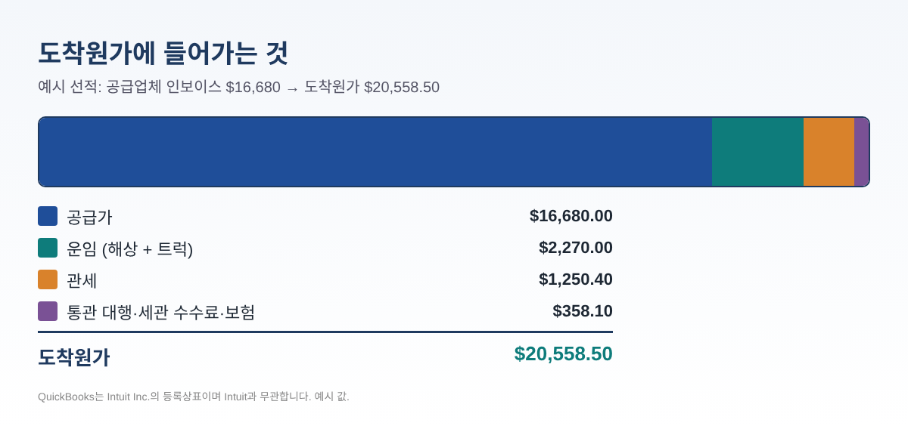
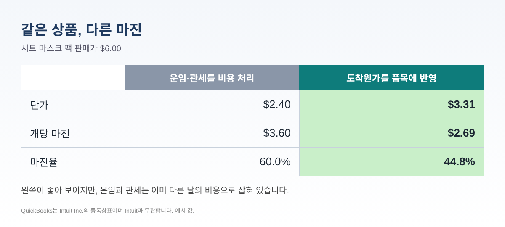
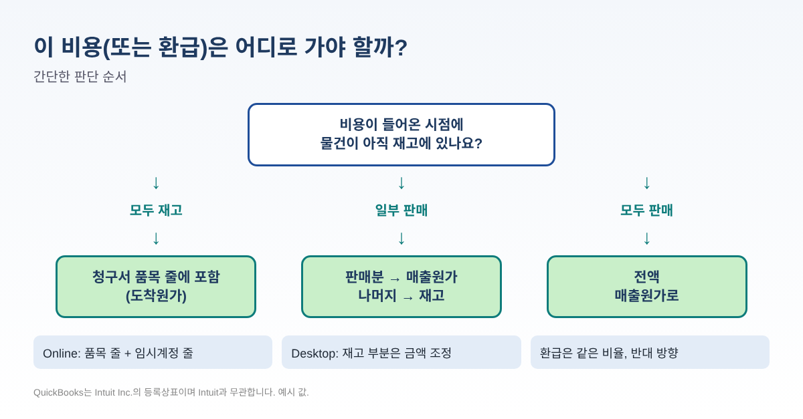

QuickBooks에서 운임·관세를 재고 원가에 넣는 방법과 관세 환급 기록하기
한국 화장품, 해외 부품, 포장 식품, 의류처럼 수입한 물건을 파는 사장님이라면 공급업체 인보이스 금액이 원가의 전부가 아니라는 것을 아실 겁니다. 해상 운임, 관세, 추가 관세, 통관 대행료, 트럭 운송비가 붙으면 실제 원가는 15~40% 올라갑니다. 그런데 QuickBooks에서는 이 비용이 대개 운임·관세 비용 계정으로 바로 들어가고, 품목 원가는 공급가 그대로 남습니다.
이 습관 하나로 세 가지가 틀어집니다. 운임을 낸 달은 손실처럼 보이고, 물건을 판 달은 이익이 부풀려 보이며, 품목 원가가 낮아 가격을 잘못 정하게 됩니다. 2026년에는 문제가 하나 더 있습니다. IEEPA 관세 환급을 받기 시작한 수입업체가 많은데, 이 돈을 장부 어디에 넣어야 할지 헷갈립니다. 이 글은 QuickBooks Online·Desktop과 간단한 엑셀로 이 문제를 모두 정리하는 방법을 설명합니다.

QuickBooks 사용자가 막히는 이유
QuickBooks 커뮤니티에는 "수입품의 운임과 통관비를 품목 원가에 어떻게 넣나요?"라는 질문이 계속 올라옵니다. 돌아오는 답은 대부분 우회 방법입니다. QuickBooks Online Plus·Advanced는 재고를 관리하지만 운임 청구서를 품목별로 나눠 주는 화면이 없습니다. Desktop은 Enterprise에만 도착원가 기능이 있고 Pro·Premier에는 없습니다. 게다가 추가 비용은 보통 다른 업체에서, 몇 주 간격으로, 각각 다른 청구서로 들어옵니다.
다행히 계산은 간단하고, 숫자만 나오면 입력은 몇 분이면 끝납니다.
1단계: 추가 비용을 모두 적고 나누는 기준 정하기
공급업체 인보이스, 운임 청구서, 관세사(통관 대행) 인보이스, 관세가 나온 통관 요약서(entry summary)를 모읍니다. 비용마다 기준을 고릅니다.
- 금액(Value) = 수량 × 단가 - 관세, 추가 관세, 세관 수수료, 보험처럼 금액에 따라 붙는 비용.
- 수량(Quantity) - 개당 수수료, 또는 품목이 비슷할 때의 통관 대행료.
- 무게(Weight) = 수량 × 개당 kg - 항공 운임, 트럭 운송.
- 부피(Volume) = 수량 × 개당 CBM - 공간으로 요금이 정해지는 해상 운임.
| 추가 비용 | 금액 | 기준 |
|---|---|---|
| 해상 운임(LCL) | $1,850.00 | 부피 |
| 관세 | $1,250.40 | 금액 |
| 통관 대행료 | $225.00 | 수량 |
| 세관 수수료 | $58.10 | 금액 |
| 적하 보험 | $75.00 | 금액 |
| 항구→창고 트럭 운송 | $420.00 | 무게 |
예시 값. 추가 비용 합계 $3,878.50.
요령: 통관 요약서에 줄별 관세가 나와 있으면 합계를 나누지 말고 그 금액을 품목별로 그대로 쓰세요.
2단계: 엑셀 공식 세 개로 배분하기
한 줄에 품목 하나, B열에 수량, C열에 단가를 넣습니다. 엑셀이나 구글 시트에서:
- 기준(금액):
=B2*C2- D열에 개당 kg이 있으면=B2*D2 - $H$1 셀 비용의 배분액:
=ROUND($H$1*E2/SUM($E$2:$E$6),2) - 도착 단가:
=(B2*C2+F2)/B2(F2는 그 줄의 배분액 합계)
반올림 때문에 1~2센트가 남거나 모자랄 수 있습니다. 차이는 가장 큰 줄에 더해 합계를 청구서와 정확히 맞추세요.
| 품목 | 수량 | 공급 단가 | 상품 가액 | 추가 비용 | 도착원가 | 도착 단가 |
|---|---|---|---|---|---|---|
| SERUM-30 | 1,200 | $3.1000 | $3,720.00 | $705.06 | $4,425.06 | $3.6876 |
| CREAM-50 | 800 | $4.2500 | $3,400.00 | $679.18 | $4,079.18 | $5.0990 |
| MASK-10P | 1,500 | $2.4000 | $3,600.00 | $1,368.22 | $4,968.22 | $3.3121 |
| TONER-150 | 600 | $3.6000 | $2,160.00 | $540.57 | $2,700.57 | $4.5010 |
| SUN-50 | 1,000 | $3.8000 | $3,800.00 | $585.47 | $4,385.47 | $4.3855 |
| 합계 | 5,100 | $16,680.00 | $3,878.50 | $20,558.50 |
예시 값. 시트 마스크 팩은 부피와 무게가 커서 38% 오르고, 선크림은 15% 오릅니다.

3단계: QuickBooks Online 입력 (임시계정 방식)
Intuit 커뮤니티 직원이 안내하는 우회 방법을 그대로 따르고, 숫자는 엑셀에서 가져옵니다. Online을 처음 쓰시는 분을 위해 메뉴를 그대로 적었습니다.
- Landed Cost Clearing 계정을 만듭니다 (톱니바퀴 ⚙ Settings → Chart of accounts → New). 유형은 보통 Other Current Assets이며, 회계사가 권하는 유형이 있으면 그것을 쓰세요.
- + New → Bill을 누르고 공급업체를 고릅니다.
- Item details에 품목마다 수량(Qty)과 도착원가 합계를 Amount로 넣습니다.
- Category details에 Landed Cost Clearing을 고르고 추가 비용 합계를 마이너스로 넣습니다 (예시에서는 -3,878.50). 이제 청구서 합계가 공급업체 인보이스와 같아집니다.
- 운임·통관·관세 청구서는 평소처럼 입력하되 비용 계정 대신 Landed Cost Clearing으로 넣습니다.
- 임시계정 레지스터를 엽니다 (Chart of accounts → View register). 선적이 끝나면 잔액이 0.00이어야 합니다.
QuickBooks Online은 재고를 FIFO(선입선출)로 평가하므로 이 물건이 팔릴 때 이 청구서의 도착원가가 매출원가로 쓰입니다.
3단계 (Desktop): Pro·Premier·Enterprise
- Lists → Chart of Accounts → Account → New: Landed Cost Clearing 계정 생성.
- Vendors → Enter Bills: Items 탭에 품목별 도착원가 합계, Expenses 탭에 Landed Cost Clearing 마이너스 금액.
- 운임·통관·관세 청구서는 Expenses 탭에서 Landed Cost Clearing으로 입력.
Desktop은 평균원가를 쓰므로 새 도착원가가 기존 재고와 섞여 평균이 됩니다. 정상입니다. Desktop Enterprise에는 도착원가 기능이 따로 있지만, 엑셀로 미리 계산해 두면 결과를 검증하기 좋습니다.
4단계: 늦게 온 비용과 관세 환급
운임 청구서가 물건 절반이 팔린 뒤에 오거나, 관세 환급이 몇 달 뒤에 들어오는 경우가 있습니다. 이미 팔린 비율로 나눕니다.
- 매출원가로:
=ROUND(금액*판매수량/받은수량,2) - 재고로: 금액 - 매출원가 부분
| 예시: 관세 환급 $2,400 | 금액 |
|---|---|
| 받은 수량 / 판매 수량 | 1,000 / 650 |
| 매출원가 감소 (65%) | $1,560.00 |
| 재고자산 감소 (남은 35%) | $840.00 |
예시 값.
분개는 차변 은행 $2,400, 대변 매출원가 $1,560, 대변 재고자산(Inventory Asset) $840입니다. 늦게 온 추가 비용이면 차·대변을 반대로 하고 대변은 외상매입금(A/P)이나 은행입니다. QuickBooks Online에서 재고자산으로 분개하면 재무상태표는 맞지만 품목의 FIFO 원가는 바뀌지 않습니다. 원래 청구서가 마감 전 기간이면 청구서를 고치는 편이 깔끔할 수 있으니 회계사와 상의하세요. Desktop에서는 Vendors → Inventory Activities → Adjust Quantity/Value on Hand에서 Total Value 조정으로 재고 부분을 처리합니다.

2026년 관세 환급 배경
2026년 2월 20일 미국 대법원은 Learning Resources, Inc. v. Trump 사건에서 IEEPA가 관세 부과 권한을 주지 않는다고 판결했습니다. 미국 세관(CBP)은 ACE 안에 CAPE라는 환급 절차를 만들었고, 청구는 수입자(importer of record)나 그 관세사만 할 수 있습니다. 절차가 단계별로 진행되고 추가 소송도 있었기 때문에, 현재 상황은 관세사나 cbp.gov에서 꼭 확인하세요. Section 232·301 같은 다른 관세는 이 판결 대상이 아니었습니다. 장부에서 기억할 점은 하나입니다. 물건 상당 부분이 아직 재고라면 환급 전액을 기타 수입으로 잡지 마세요.
흔한 실수
- 물건이 아직 선반에 있는데 운임·관세를 바로 비용 처리.
- 크기·무게가 다른데 모든 품목에 같은 % 적용.
- 관세를 두 번 계산 (줄별로 한 번, 합계로 또 한 번).
- 마이너스 임시계정 줄을 빠뜨려 청구서가 인보이스와 다름.
- 관세 환급 전액을 수입으로 처리.
- 공유 엑셀에 전체 통관 번호나 은행 정보 입력.
자주 묻는 질문
QuickBooks Online에 도착원가 기능이 있나요?
이 글을 쓰는 시점에 Plus·Advanced에는 없습니다. Intuit 커뮤니티 직원도 위의 청구서·임시계정 방식이나 재고 앱을 안내합니다. Desktop Enterprise에는 기능이 있습니다.
해상 운임은 어떤 기준이 좋나요?
해상 운임은 공간 기준으로 매겨지므로 보통 부피가 맞습니다. 품목별 CBM을 모르면 금액 기준도 괜찮습니다. 중요한 것은 매번 같은 규칙을 쓰는 것입니다.
운임 청구서 하나에 선적이 두 건이면요?
먼저 선적별로(금액이나 부피 기준) 나눈 다음, 각 선적 안에서 품목별로 배분하세요.
관세 환급은 과세 소득인가요?
관세를 낼 때 어떻게 처리했는지에 따라 다릅니다. 세무 전문가와 상의하세요. 이 글은 장부 기록만 다룹니다.
체크리스트
- 공급업체 인보이스, 운임 청구서, 통관 대행 인보이스, 통관 요약서 모으기.
- 비용마다 금액·수량·무게·부피 중 기준 선택.
- 배분 후 배분액 합계 = 청구서 합계 확인.
- 청구서: 도착원가 품목 줄 + 마이너스 임시계정 한 줄.
- 운임·통관·관세 청구서는 임시계정으로, 잔액 0.00 확인.
- 늦게 온 비용·환급은 판매 수량과 재고 수량 비율로 분배.
- 관세 환급 청구는 통관 건별로 입금될 때까지 추적.
면책: 이 글은 교육용 자료이며 세무·법률·회계·통관 자문이 아닙니다. 규정, CBP 절차, QuickBooks 메뉴는 바뀔 수 있으니 실행 전 확인하세요. 숫자는 모두 예시입니다. QuickBooks는 Intuit Inc.의 등록상표이며, 이 글은 Intuit과 무관하고 보증받지 않았습니다. (QuickBooks is a registered trademark of Intuit Inc.; not affiliated with or endorsed by Intuit.)
위 과정을 그대로 해 주는 도착원가 & 관세 환급 배분기 2026은(는) 아래 무료 키트 다운로드에서 가입 없이 무료로 받으실 수 있습니다(엑셀 + PDF 가이드).
출처
- Intuit QuickBooks Community: QBO 2023 How to apply import costs to inventory?
- Intuit QuickBooks Community: Booking several costs for same inventory item
- Intuit QuickBooks Community: Bill for inventory purchase which includes a freight-in cost
- Intuit QuickBooks Community: Import purchase and CIF allocation to inventory (2026)
- Intuit help: Calculate landed costs in QuickBooks Desktop Enterprise
- Intuit help: Inventory valuation methods (FIFO)
- Barclay Damon, Where the tariff refund process stands (July 21, 2026)
- Skadden, Tariff refund mechanism takes shape (March 24, 2026)
- Holland & Knight, IEEPA tariff refund update (June 15, 2026)
- U.S. Customs and Border Protection (check current refund guidance)
무료 키트 다운로드
글에서 설명한 내용을 그대로 따라 할 수 있는 도구입니다. 가입 없이 바로 받으세요.
- 단계별 가이드 (PDF)Landed_Cost_Guide_2026_EN_KR.pdf · 535 KB
- Excel 계산 도구 (.xlsx)Landed_Cost_Tariff_Refund_Allocator_2026_EN_KR.xlsx · 37 KB
본인과 본인 사업에 무료로 쓰세요. 재판매·재배포는 하지 마세요. 일반 정보이며 세무·법률·회계 자문이 아닙니다. 숫자는 본인 자료로 꼭 확인하세요. QuickBooks는 Intuit Inc.의 상표이며 BIZLEX는 Intuit과 관련이 없습니다.